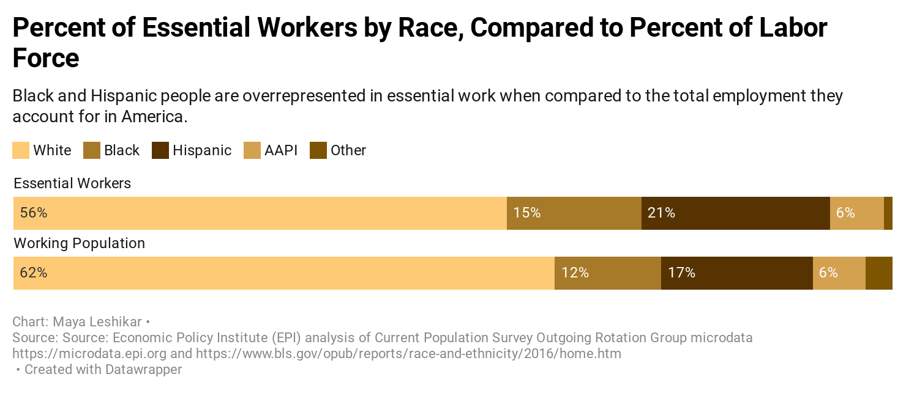
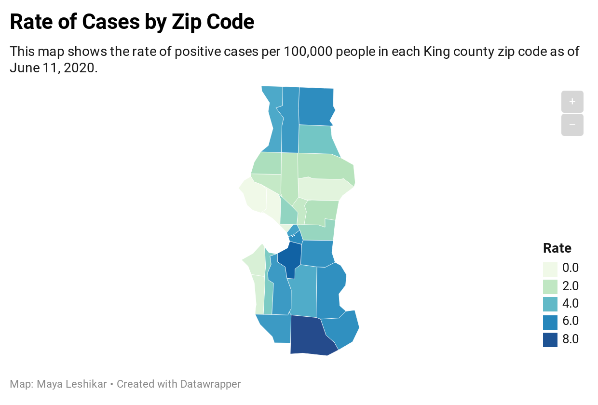
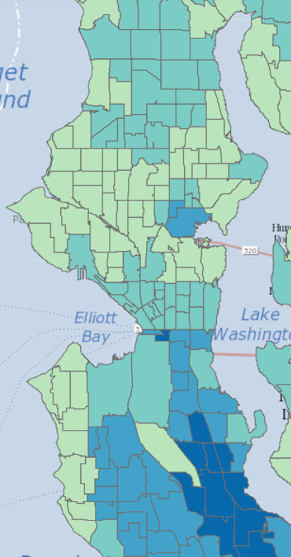

How COVID-19 is disproportionately affecting Seattle's communities of color
While COVID-19 wreaks havoc on the natin, some groups have felt the affects of the virus more than others. In King County, the black, Hispanic and Native Hawaiian and Pacific Islander populations have been infected at disproportionate rates. The overall age-adjusted rate is 359.9 per 100,000 for all of King County, but the rates for whites is 179.3.

More
Essential Workers
Living and working conditions may factor into the rates of COVID-19 that we see in racial and ethnic minority groups. According to the CDC, the risk of infection may be greater for essential workers who continue to go to work and interact with others, and black and Hispanic workers are overrepresented in essential industries.
Geography
South Seattle has been hit particularly hard, having the highest rates of positive COVID-19 tests when adjusted for population.
Compare that to this Census tract map that shows communities with the highest amount of people of color.
 